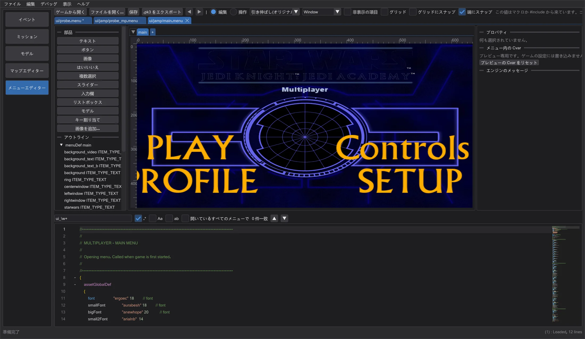
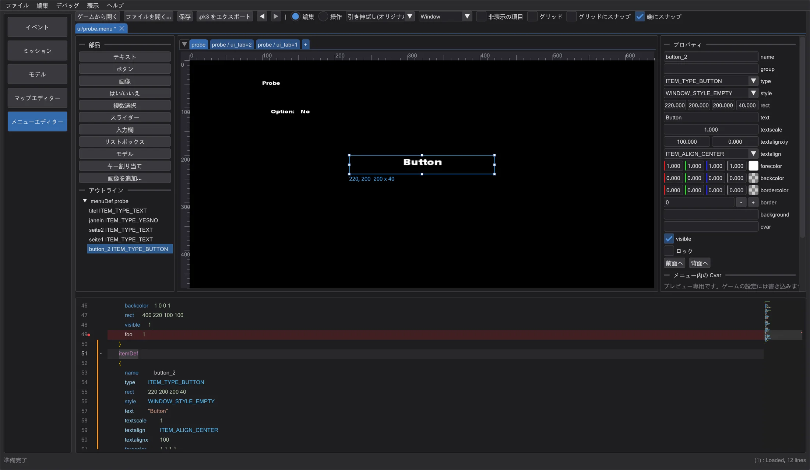
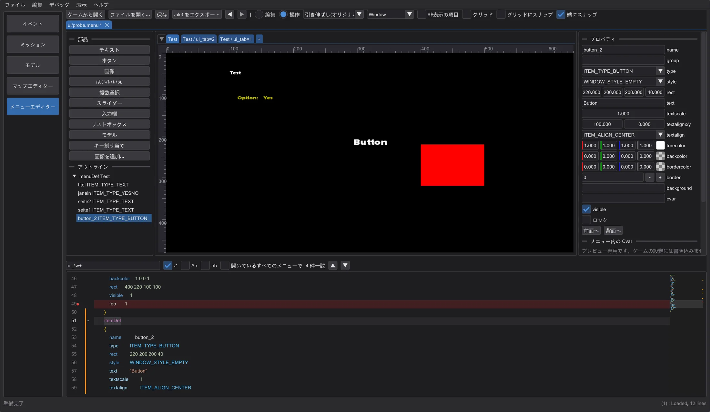
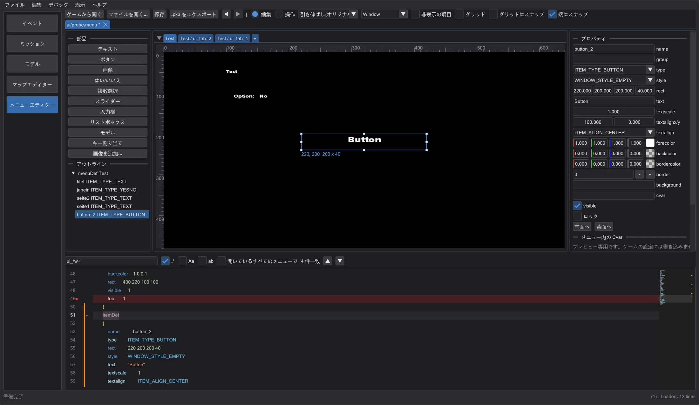

メニューエディター
ゲームのメニュー(.menu)をテキストと 640x480 のキャンバスで同時に編集します。読み込み・描画・操作はゲームと同じです。
メニューを開く#
モードバーで メニューエディター をクリックします。ゲームから開く は設定したゲームの ui/ メニューをすべて一覧にします(.pk3 から読み込むだけで変更しません)。ファイルを開く かファイルのドロップでディスクから開きます。読み方はパスで決まり、ゲームと同じです:ui/jamp/、ui/jk2mp/、ui/MD_MP/ はマルチプレイのプリプロセッサー(#include、#define、マクロ、menudef.h)、それ以外はシングルプレイと同じです。
エンジンのメッセージ には、ゲームがファイルを読み込むときに出す内容が原文のまま行番号つきで表示されます(例:Unknown item keyword 'foo' Line #21)。クリックするとその行へ移動し、コードエディターで赤く表示されます。
キャンバスとページ#

ファイルの menuDef はそれぞれキャンバスの上のタブになります。複数の値を持つ cvar で表示される項目(cvarTest + showCvar、ui_tab のようなページ)は値ごとにタブになります。+ で新しい menuDef を追加します。キャンバスはゲームの仮想 640x480 画面です:元のゲームと同じ 引き伸ばし(オリジナル)、4:3(黒帯あり)、縦横比を確かめるための解像度プリセットがあります。
- クリックで選択(Shift/Ctrl で追加)、ドラッグで移動、白いハンドルでサイズ変更します。テキストで変わるのは
rectの数値だけで、コメントやインデントはそのままです。 - 端にスナップ はほかの項目・画面・ガイド(ルーラーから引き出す)の端と中央にスナップし、グリッドにスナップ はグリッドにスナップします。ドラッグ中に Alt でスナップを切り、Shift で方向を固定します。矢印キーで 1、Shift 併用で 10 移動します。
- 部品 は新しい項目(テキスト、ボタン、画像、はい/いいえ、複数選択、スライダー、入力欄、リスト、モデル、キー割り当て)をページの
menuDefの最後に挿入します。画像を追加 は PNG・JPG・TGA をgfx/menus/<name>として取り込み、エクスポート時に .pk3 に入れます。 - プロパティ で選んだ項目を編集し、複数なら揃え・均等配置・グループ化ができます。前面へ/背面へ で描画順(ゲームはファイル順に描画)を変えます。ロック で項目を動かないようにします。
操作と Cvar#

操作 ではゲームと同じようにメニューが動きます:マウスを重ねるとフォーカス(mouseEnter、onFocus)、クリックで項目の action を実行し、はい/いいえ・複数選択・スライダーは cvar を変え、open、close、show、hide、setfocus、setcvar、setitemtext、transition などは ui_shared と同じように働きます。ゲームが必要なもの(サウンド、exec、uiScript)は スクリプトログ に表示されます。
メニュー内の Cvar にはメニューが読む・設定するすべての cvar が、表示を制御するものを先頭に、出てくる値とともに並びます。変えるとほかの状態を確認できます。プレビューの中だけのもので、ゲームの設定には一切触れません。
コードエディター#

ui_tab で赤い箱が表示され、はい/いいえのクリックで ui_probe が変わります。| Ctrl + F / Ctrl + H | 検索/置換(正規表現、大文字小文字、単語単位、開いているすべてのメニュー)。一致箇所はミニマップに表示 |
| Ctrl + D / Ctrl + Shift + L / Alt + Click | 次の一致/すべての一致/カーソル追加(マルチカーソル) |
| Ctrl + Space | 補完:キーワード、cvar、項目名、シェーダーのパス、@MENUS 文字列 |
| F12 / Ctrl + Click | カーソル位置の名前の menuDef/itemDef へ移動 |
| Ctrl + F2 / F2 / Shift + F2 | スクリプトエディターと同じブックマーク(余白のクリックでも) |
| Ctrl + / , Tab / Shift + Tab | 行のコメント化、インデント/解除 |
余白はスクリプトエディターと同じです:オレンジ = 保存後に変更、緑 = 変更して保存済み、青 = 開いたときの状態に戻った行。menuDef、itemDef、スクリプトのブロックは行番号の横の +/- で折りたためます。キャンバスの項目をクリックするとその itemDef へ移動し、itemDef 内のカーソルでその項目が選ばれます。

保存とエクスポート#
保存 はエディターのテキストをそのまま書き込みます。ゲームから開いたファイルは別の場所に保存します。.pk3 をエクスポート はメニューをゲーム内のパスで、画像とともに .pk3 にまとめます。どちらもゲームのフォルダーには書き込みません。